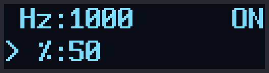
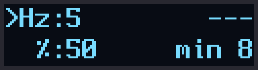
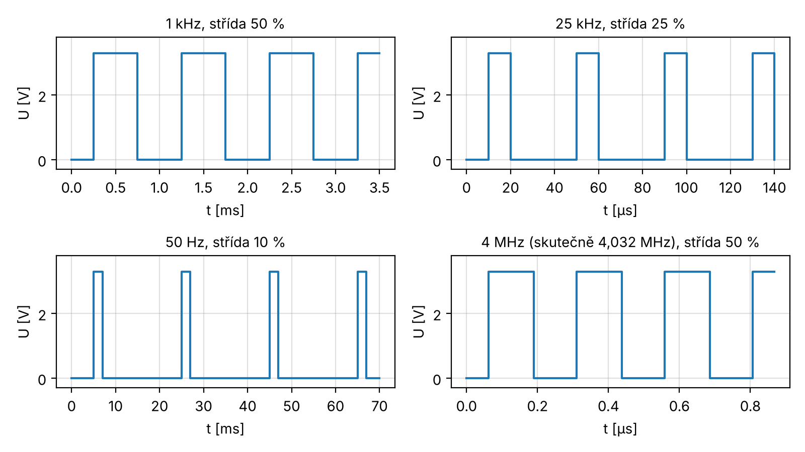

Zařízení generuje obdélníkový signál, u kterého jde nastavit kmitočet a střídu. Hodnoty se zadávají na klávesnici 4×4 a zobrazují se na malém OLED displeji. Signál je na pinu GPIO20 (pin 26) Raspberry Pi Pico.
Signál vyrábí hardwarové PWM v čipu RP2040, takže program ho jen nastaví a dál se o něj nestará. Kmitočet jde nastavit od 8 Hz do 4 MHz a střída od 0 do 100 %.
Použité součástky:
Schéma je nakreslené v KiCadu (soubor schema/pwm_generator.kicad_sch) a je na další
straně. Klávesnice nepotřebuje žádné rezistory, protože se používají vnitřní pull-down rezistory
v Picu.
| Co | GPIO | Pin na Picu |
|---|---|---|
| klávesnice – řádky (vývody 1–4) | GPIO2–GPIO5 | 4, 5, 6, 7 |
| klávesnice – sloupce (vývody 5–8) | GPIO6–GPIO9 | 9, 10, 11, 12 |
| displej SDA | GPIO10 | 14 |
| displej SCL | GPIO11 | 15 |
| displej VCC / GND | 3V3 / GND | 36 / 23 |
| výstup PWM | GPIO20 | 26 |
Pozor, displeje od různých výrobců mají vývody v různém pořadí, je potřeba se podívat na popisky na modulu.
| Klávesa | Co dělá |
|---|---|
| A | zadávání kmitočtu (Hz) |
| B | zadávání střídy (%) |
| C | spustí generátor |
| D | zastaví generátor (výstup je pak v nule) |
| 0–9 | číslice |
| * | smaže poslední číslici |
| # | smaže celé číslo |
Například 1 kHz se střídou 25 % se nastaví takto: A 1 0 0 0 B 2 5 C.
Na displeji jsou dva řádky: kmitočet a střída. Šipka > ukazuje, co se právě
zadává. Vpravo nahoře je ON, když generátor běží, a OFF, když je zastavený.
Když je zadaný kmitočet menší než 8 Hz, ukáže se --- a min 8 a nic se
negeneruje.


Displej při 1 kHz / 50 % a při kmitočtu pod 8 Hz (obrázky z emulátoru).
Program je napsaný v jazyce C a používá Pico SDK. Skládá se z těchto souborů:
pwm_generator.c – hlavní program (klávesnice, zadávání, nastavení PWM, displej),ssd1306.c a ssd1306.h – ovládání displeje přes I2C,font8x16.c a font8x16.h – písmo pro displej,CMakeLists.txt – popis, jak se program sestaví.Program vychází z kódu ze zadání. Změněné jsou piny podle zapojení a je opravených pár chyb, např. dělení nulou při kmitočtu 0 a zákmit do nuly při střídě 100 %.
Hlavní smyčka běží pořád dokola každých 10 ms. Nejdřív se přečte klávesnice: program postupně dá na každý řádek log. 1 a dívá se, na kterém sloupci se objeví. Klávesa se vezme, až když je stisknutá ve dvou čteních po sobě, aby nevadily zákmity tlačítek. Když se změní kmitočet nebo střída, program spočítá děličku a periodu pro PWM a nastaví je. Nakonec se překreslí displej.
Displej po zapnutí napájení chvíli nereaguje, a když se mu pošlou příkazy moc brzo, zůstane tmavý. Proto program po startu čeká 200 ms a teprve potom displej nastaví. Kdyby displej neodpověděl, zkusí to znovu.
V souboru CMakeLists.txt se načte Pico SDK, nastaví se, ze kterých souborů se
program skládá, a připojí se knihovny pro GPIO, I2C a PWM. Výpis přes printf jde
přes USB. Na konci se vytvoří soubor .uf2, který se nahraje do Pica.
export PICO_SDK_PATH=/cesta/k/pico-sdk cmake -S . -B build cmake --build build
Ve VS Code s rozšířením Raspberry Pi Pico stačí projekt otevřít přes Import Project
a dát Compile. Hotový soubor pwm_generator.uf2 se nahraje tak, že se při
připojování Pica k USB drží tlačítko BOOTSEL a soubor se přetáhne na disk RPI-RP2.
Program byl vyzkoušený v emulátoru Raspberry Pi Pico (rp2040js), ke kterému byl připojený
model displeje a klávesnice. Emulátor spouští přímo přeložený soubor .uf2.
Na výstupu GPIO20 se měřil kmitočet a střída:
Vyzkoušelo se taky, že funguje mazání číslic, omezení hodnot (nad 4 MHz a nad 100 %), zastavení klávesou D a že displej ukazuje správné hodnoty. Celkem {{TESTY}}. S pauzou 200 ms se displej po startu nastavil hned napoprvé, bez pauzy první příkazy odmítl.
